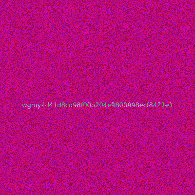
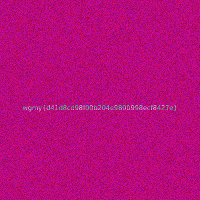

Invisible Ink
Description
The flag is hidden somewhere in this GIF. You can't see it? Must be written in transparent ink.
Solution
Initial Analysis
Given a GIF file that presumably contains hidden information
The challenge name and description hint at transparency/visibility tricks
"Invisible ink" suggests parts of the image might be hidden or partially visible
Using Stegsolve
Tool used: Stegsolve (popular steganography analysis tool)
First step: Analyzed the GIF file to extract individual frames
Found 2 distinct frames in the GIF
Frame Analysis
Downloaded both frames separately
Used Stegsolve's color manipulation capabilities to enhance visibility
Each frame contained partial letters of the flag
Neither frame alone contained the complete flag

 Flag Recovery
Key insight: The flag was split across two frames
Used Stegsolve's frame combiner feature to merge the two frames
The combination revealed the complete flag

Tools Used
Stegsolve (Primary tool)
Frame extraction
Color plane analysis
Frame combination
Flag Recovery
Key insight: The flag was split across two frames
Used Stegsolve's frame combiner feature to merge the two frames
The combination revealed the complete flag

Tools Used
Stegsolve (Primary tool)
Frame extraction
Color plane analysis
Frame combination
Flag
WGMY{b6d180d9c302d8a8daad1f2174a0b212}